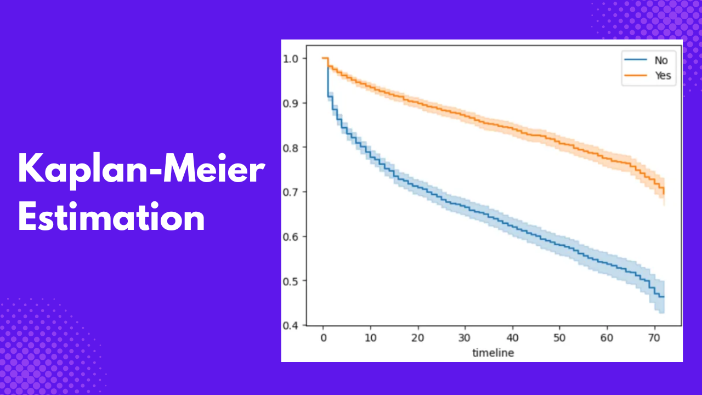
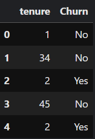

Traditional linear and logistic regression methods have been shown to predict outcomes with minimal bias over time. But there is a caveat: These methods don’t account for time-dependent outcomes. In this article, you will learn more about Kaplan-Meier survival analysis estimation, its applications, and how to use it to analyze data using the survival analysis Python library lifelines.
What is Survival Analysis?
Imagine a clinical study where patients are given a new cancer treatment, and you want to analyze how long it takes for them to relapse.
Let’s say the key variables are the type of treatment, age of the patient, time to relapse, and censoring; that is, patients might relapse at the end of the study with no idea of their relapse time, or some might die or drop out before the end of the study.
Unlike traditional regression models, we might want to model the time to relapse using the treatment type and age. However, this approach has a lot of setbacks:
- If a patient has not relapsed by the end of the study, their time is censored. We have to either exclude these patients from the study, which can lead to biased estimates, or treat these censored patients as if they had relapsed before the study’s end, which is incorrect.
- The risk of relapse is not constant over time, which means the model does not account for the fact that patients might be at different risks at different times.
- The data may or may not be normally distributed, and linear regression assumes the normality of errors.
- For logistic regression, it only tells us if a patient relapsed or not but does not tell us when the relapse happened.
Survival analysis is designed explicitly for time-dependent data and addresses all the above setbacks of traditional regression models. It is a branch of statistics that focuses on analyzing the time until an event of interest occurs. This event can be death, disease relapse, equipment failure, customer churn, or any other time-dependent event.
Terminologies in Survival Analysis
Before conducting a survival analysis, there are some terminologies you should be familiar with:
- Survival Time: This is the duration until an event of interest occurs.
- Event: This is the occurrence of the outcome of interest.
- Censoring: This is incomplete information about a subject, either because the subject experienced the event of interest after the end of the study or the subject dropped out of the study. For example, a patient changing hospital during a cancer study on treatment relapse or the patient relapsing after the end of the study. There are three types of censoring:
- Right Censoring: The event of interest did not occur before the end of the study.
- Left Censoring: The event of interest occurred before the start of the observation period or the subject dropped out of the study.
- Interval Censoring: Events of interest occur within a specific time interval, but the exact time is unknown.
- Survival Function: The probability that a subject will survive beyond a specific time t.
- Survival Curve: This graphical representation of the survival function over time.
What is Kaplan-Meier Estimation?
Kaplan-Meier is a statistical methodology used to estimate the survival function from time-to-event data. The survival probability at the time \(t_i\) is given as:
\[ S(t_i) = \prod_{j=1}^{i}(1-\frac{d_j}{n_j}) \]
Where:
- \(t_i\) - Time of the \(i_{th}\) event
- \(d_j\) - Number of events (e.g., deaths) at \(t_i\)
- \(n_j\) - Number of individuals at risk just before \(t_i\).
Don’t worry; you won’t have to calculate this by hand. The lifelines Python library has classes and methods to help you perform a Kaplan-Meier Estimation.
Case Study: Employee Churn
In this article, we will use the Telco customer churn dataset to demonstrate how to perform a Kaplan-Meier estimation by estimating customer retention and also find out which categories of customer type are likely to churn. Before loading the data, ensure the following libraries are installed.
Let’s add the following imports, load the data, and preview the main variables of interest.
import pandas as pd
from matplotlib import pyplot as plt
telco_df = pd.read_csv("/kaggle/input/telco-customer-churn/WA_Fn-UseC_-Telco-Customer-Churn.csv")
telco_df.loc[:,["tenure","Churn"]].head()
tenure and Churn variables. Image by Author.For a survival analysis, we are interested in two key variables, event and time, which are Churn and tenure in the dataset, where tenure is measured in months.
Recode the Churn variable, so 1 represents churn, while 0 represents censoring. Censoring, in this case, means that a customer might churn in the future.
telco_df["Churn"] = telco_df["Churn"].map({"No":0,"Yes":1})
telco_df.loc[:,["tenure","Churn"]].head() 
Churn variable into numeric format. Image by Author.Rename the tenure and Churn variables to time and event. This is unnecessary, but it is just to make it easy to relate to the concepts discussed earlier.
time = telco_df["tenure"]
event = telco_df["Churn"]Kaplan-Meier Estimation
Import the KaplanMeierFitter() class from the lifelines library to perform a Kaplan-Meier estimation. Then, we create an instance of the class and fit it into our data.
from lifelines import KaplanMeierFitter
kmf = KaplanMeierFitter()
kmf.fit(time, event_observed=event)You can get the Kaplan-Meier estimate for each timeline by calling the survival_function_ method on the kmf object.
kmf.survival_function_
You can also get a plot of these values by calling the plot_survival_function method.
kmf.plot_survival_function()
plt.title("Survival function of customer churn")
Survival Estimate by Group
What if we are interested in seeing the survival plots of various groups in the dataset? You can achieve this by filtering and fitting a survival function for each group and combining it into a single plot. For example, let’s see the survival plot of customers based on whether they have partners or not.
partner = telco_df["Partner"]
ix = (partner == "Yes")
kmf.fit(time[~ix], event[~ix], label = "No")
ax = kmf.plot_survival_function()
kmf.fit(time[ix], event[ix], label = "Yes")
ax = kmf.plot_survival_function()
For variables with more than two groups, you can follow the following approach. Let’s examine each group based on PaymentMethod and see which payment method group will have the highest retention.
payment_methods = telco_df["PaymentMethod"].unique()
for i, payment_method in enumerate(payment_methods):
ax = plt.subplot(2, 3, i + 1)
ix = telco_df['PaymentMethod'] == payment_method
kmf.fit(time[ix], event[ix], label=payment_method)
kmf.plot_survival_function(ax=ax, legend=False)
plt.title(payment_method)
plt.xlim(0, 50)
plt.tight_layout()
Add a Descriptive Table Below the Plot
When publishing results, following the plots with descriptive tables is encouraged. This table shows the number of customers who will churn at various time intervals, censored customers, and customers at risk of churning.
partner = telco_df["Partner"]
ix = (partner == "Yes")
ax = plt.subplot(111)
kmf_yes = KaplanMeierFitter()
ax = kmf_yes.fit(telco_df.loc[ix]["tenure"], telco_df.loc[ix]["Churn"],label = "Yes").plot_survival_function(ax = ax)
kmf_no = KaplanMeierFitter()
ax = kmf_no.fit(telco_df.loc[~ix]["tenure"], telco_df.loc[~ix]["Churn"],label = "No").plot_survival_function(ax = ax)
from lifelines.plotting import add_at_risk_counts
add_at_risk_counts(kmf_yes, kmf_no, ax=ax)
plt.tight_layout()
Interpreting Kaplan-Meier Plots
Interpreting the Kaplan-Meier plot is easy since it’s a descriptive statistical methodology. Let’s take a look at the first plot we had.

In the plot above, the y-axis represents the number of customers remaining at a given time. The survival probability starts at 1 (100%) at time 0, meaning all customers are present initially. As time progresses, the likelihood of customer retention decreases. The downward trend shows that customer retention is continuous over time.
The shaded area indicates the confidence interval for the Kaplan-Meier survival analysis estimate, where a narrower band implies higher confidence and a wider band suggests more uncertainty. Around 75% of customers remain by mid-duration (1). At the end of the timeline, 60% of customers are still active (2), showing that the business retains a significant portion of customers over the period.

The plot above groups the previous plot into two categories: those with and without partners. The orange curve represents those with partners, while the blue represents those without partners.
Those with partners have a higher retention probability than those without partners. Their survival probability is around 70% by the end of the timeline.
Those without partners exhibit a steeper decline in survival probability, indicating they are more likely to churn faster. By the end of the timeline, their survival probability is approximately 45%.
This gap between the two curves highlights that the presence of a partner is a significant factor influencing customer retention.
The table below the plot further explains the plot. At time zero, the starting population was 3,393 customers with partners and 3,639 without partners. Nine were censored with zero events for customers with partners, while two were censored with zero events for those without partners.
At the end of the timeline, 452 customers with partners are at risk of churning, 2,292 have been censored, and 658 churned. For those without partners, 80 are at risk of churning, 2,362 have been censored, and 1,199 have churned.
These results show that customers with partners have a higher retention rate than those without partners. This could be due to shared decision-making or factors like excellent financial stability or dual service usage.

The plot above also compares customer retention across four different payment methods. Electronic checks show the poorest retention rate, with a sharp initial and continuous decline. By timeline 50, with a customer retention rate of about 45%.
Mailed check customers show better retention than electronic check users but still demonstrate concerning churn patterns. Starting with a sharp initial drop, the curve continues to decline more gradually, reaching about 75% retention by the end of the period. This suggests that while mailed check users are more stable than electronic check users, they still represent a higher risk group than automatic payment methods.
Bank transfer (automatic) shows strong retention patterns. The curve declines gradually, maintaining approximately 85% retention by the end of the observation period. This suggests that customers who set up automatic bank transfers are significantly more likely to remain loyal customers.
Credit card (automatic) payments show similarly strong retention patterns to automatic bank transfers. The survival curve remains high, ending at roughly 85% retention. The gradual decline and narrow confidence intervals suggest that automatic credit card payments, like automatic bank transfers, are associated with more stable, long-term customer relationships.
Overall, a clear pattern shows that automatic payment methods (bank transfer and credit card) are associated with significantly better customer retention than manual payment methods (electronic and mailed checks).
Conclusion
Well, that was a quick introduction to Kapler-Meier survival analysis estimation. I hope by now you can pick any dataset of your choice and implement what you have learned in this article, like estimating the survival function at different timelines and plotting the survival curve. If you want to know more, here are some resources I hope you find helpful.
What is survival analysis, and when should I use it? - PMC
The Ultimate Guide to Survival Analysis
Introduction to Survival Analysis with scikit-survival
The Kaplan Meier estimate in survival analysis
Need Help with Data? Let’s Make It Simple.
At LearnData.xyz, we’re here to help you solve tough data challenges and make sense of your numbers. Whether you need custom data science solutions or hands-on training to upskill your team, we’ve got your back.
📧 Shoot us an email at admin@learndata.xyz—let’s chat about how we can help you make smarter decisions with your data.